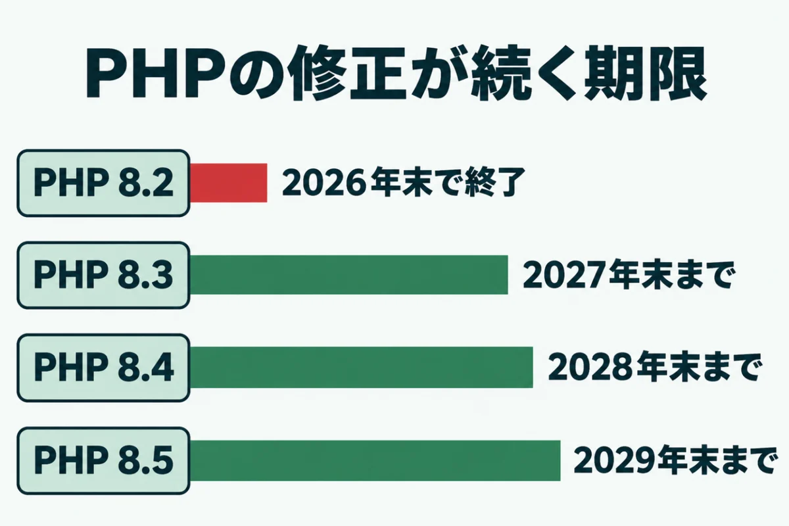
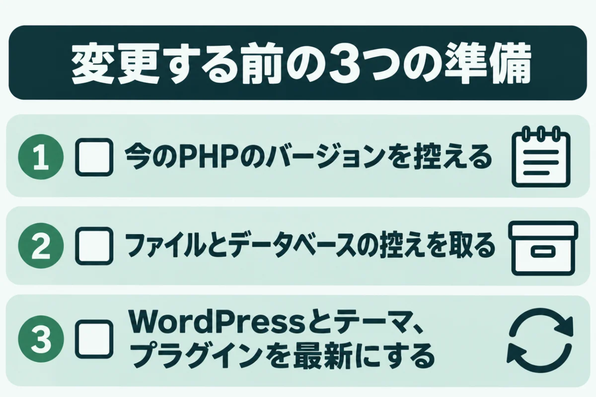
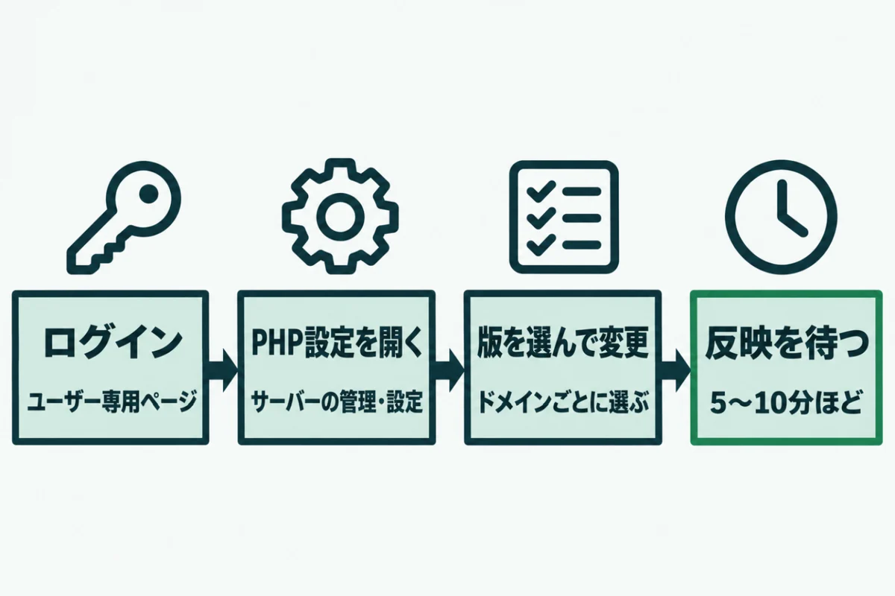
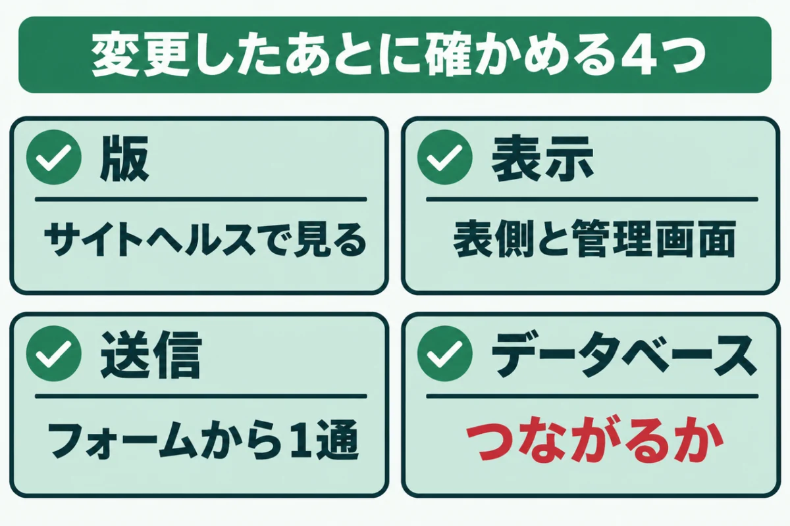
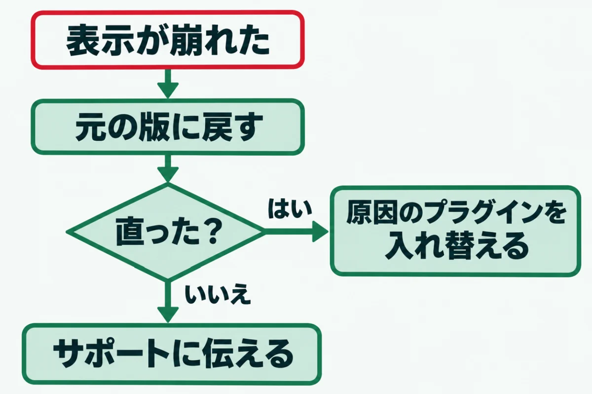

ロリポップでPHPのバージョンを変更する手順8.3以上への上げ方と戻せないときの注意

「ロリポップのPHPを上げるように言われたけれど、どこから変えるのか分からない」と困っていませんか？
切り替えそのものは、ユーザー専用ページから数分で終わります。ただ、ロリポップでは使っているPHPの版が自動では切り替わりません。自分で変えない限り、古い版のまま動き続けるのです。
この記事では、ロリポップでPHPのバージョンを変更する手順を、準備から順に紹介します。うまくいかなかったときの戻し方と、戻せない場合の注意もまとめました。
公式マニュアルとお知らせ、運営者が自社サイトでPHPを上げたときに起きたことをもとに書いています。作業の前に一度通して読んでおくと安心です。
ロリポップでPHPのバージョンを変更する前に知っておきたいこと

ロリポップでPHPを変更する前に、どのバージョンを選べばよいかを決めておきましょう。あわせて、ロリポップが古い版をどう扱っているかも知っておくと迷いません。
この2つを押さえておくと、なぜ今切り替えるのかがはっきりします。選ぶ版が決まっていれば、画面を開いてから迷う時間も減るはずです。社内で相談するときの説明にも使えるので、画面を開く前に順に確かめてください。
選べる版と、今選ぶならどれか
ロリポップのサーバーの仕様では、どのプランでもPHPの8.3、8.4、8.5が選べる形です。php.netによると、PHP 8.2の弱点の修正は2026年12月31日で終わります。8.3は2027年末、8.4は2028年末まで修正が続く予定です。
WordPress公式もロリポップも、PHP 8.3以上での運用を勧めています。今から選ぶなら8.3か8.4にしておくと、しばらくは切り替えずに済むでしょう。サポート終了の意味は、PHPのサポート終了とは？放置の危険と確認・更新の手順｜8.2は2026年末で終了で紹介しました。
古い版は自動で切り替わらない
ロリポップは2026年5月のお知らせで、PHPの版が自動では切り替わらないと案内しました。何もしなければ、契約したころの版のまま動き続けます。何年も前に作ったサイトほど、古い版が残っている場合があるのです。
2026年10月にはPHPに重大な弱点が見つかりました。ロリポップは一部のサーバーで表示を止め、修正を当てています。8.1以前の版には独自に修正を当てたものの、応急的な対策だという説明です。今後は修正が出せない場合もあるとして、8.2以降への切り替えを呼びかけました。
ロリポップでPHPのバージョンを変更する前の3つの準備

ロリポップでPHPのバージョンを変更する前に、3つの準備を済ませておくと安心です。切り替えは数分で終わりますが、準備を飛ばすと戻すときに手間取ります。
どれもユーザー専用ページとWordPressの管理画面でできる作業です。合わせても30分ほどで終わるので、切り替えの日の前に済ませておくと落ち着いて進められます。特に、何年も手を入れていないサイトは念入りに確かめてください。
① 今のPHPのバージョンを控える
まず、今のPHPのバージョンを確かめて控えておきましょう。ロリポップでは、ユーザー専用ページの「PHP設定」にドメインごとの版が表示されます。WordPressなら、「ツール」の「サイトヘルス」にある「情報」タブでも見られる仕組みです。
今の版を控えておけば、戻すときに迷いません。ドメインを複数使っているなら、ドメインごとに書き留めておきましょう。外から確かめる方法も紹介しています。WordPressのバージョンを確認する方法（管理画面と外からの両方）を見てください。
② ファイルとデータベースの控えを取る
ロリポップの公式の解説は、切り替えの前にファイルとデータベースの両方を控えるよう勧めています。バックアップオプションを使っていれば、管理画面から過去7回分の控えを取り出せる仕組みです。
オプションがなければ、ファイルはFTP、データベースはphpMyAdminで書き出します。切り替えの直前に取っておけば、困ったときに戻す先ができるでしょう。控えを取ったら、ファイルが開けるかも一度見ておくと安心です。
③ WordPressとテーマ、プラグインを最新にする
古いテーマやプラグインは、新しいPHPに対応していないことがあります。切り替えの前に、WordPress本体、テーマ、プラグインの順に最新にしておきましょう。公式マニュアルも、テーマとプラグインが変更後の版に対応しているかを先に確かめるよう案内しています。
何年も更新されていないプラグインは、この機会に置き換えを考えてください。本体が何年分も古いときは、一気に上げず段階を踏むのが安全です。WordPressを何年も更新していないときの安全な更新手順｜一気に上げずに段階的にで紹介しました。
ロリポップでPHPのバージョンを変更する手順

PHPの変更は、ユーザー専用ページのPHP設定から行います。公式マニュアルの手順に沿って、画面の名前もそのまま載せました。
画面の配置は変わることがあるので、見つからないときは公式マニュアルの最新の画面で確かめてください。作業は、サイトを見る人が少ない時間帯に行うと安心です。流れは、ログインから反映の確認までの4段階に分かれます。
ユーザー専用ページのPHP設定を開く
ユーザー専用ページにログインし、左のメニューの「サーバーの管理・設定」から「PHP設定」を開きます。契約しているドメインが一覧で並び、それぞれの今の版が表示される画面です。
公式マニュアルによると、PHP設定はエコノミーからエンタープライズまでのプランで使えます。ドメインごとに違う版を選べるので、まず変えたいドメインの行を探してください。サイトのアドレスと、一覧のドメイン名が合っているかも見ておきましょう。
ドメインの版を選んで「変更」を押す
変えたいドメインの行で、PHPのバージョンを選んで「変更」を押してください。公式マニュアルによると、反映までに5分から10分ほどかかります。押した直後に表示が変わらなくても、慌てずに待ちましょう。
すべてのドメインを一度に変える設定もありますが、まとめて変えるのは避けたほうが無難でしょう。ロリポップの解説は1つずつ変えて確かめる方法を勧めています。複数のサイトを同時に崩さないためです。一度に大きく上げるのが不安なら、間の版を1つずつ試して確かめる方法もあります。
CGI版・モジュール版・LiteSpeed版の違い
ロリポップのPHPには、CGI版、モジュール版、LiteSpeed版の3つの動かし方があります。CGI版はエコノミーからスタンダードまで、モジュール版はライトとスタンダードで使える仕組みです。LiteSpeed版は、ハイスピードとエンタープライズで動いています。
公式の案内によると、php.iniで設定を変えられるのはCGI版だけと書かれていました。php.iniを書き換えているサイトは、版を上げたあとも設定が効いているかを確かめてください。迷ったら、今の動かし方を変えずに版だけを上げるのが無難でしょう。
ロリポップでPHPのバージョンを変更したあとの確認

ロリポップでPHPのバージョンを変更したら、反映を待ってその場でサイトの動きを確かめましょう。ロリポップのお知らせも、表示や問い合わせフォーム、アップロードの動きを確かめるよう呼びかけています。
確かめる順番を決めておけば、見落としを減らせるでしょう。崩れに気づくのが早いほど、戻す判断もしやすくなるはずです。
サイトヘルスと表示、フォームを確かめる
WordPressの「ツール」の「サイトヘルス」で、「情報」タブのサーバーの欄を開きます。PHPの版が選んだものに変わっていれば、反映は済んでいるはずです。続けて、トップページと主なページ、管理画面を開いて崩れがないかを見てください。
運営者は自社サイトでPHPを上げたとき、前後で全ページの表示を比べて確かめました。お問い合わせフォームから自分あてに1通送り、自動返信と管理者あてのメールが届くかも見ておきましょう。英語のエラー文や真っ白な画面が出たら、次の章の手順に進みます。
データベースにつながらないときはパスワード形式を見る
PHPを変えたあとに、データベースへつながらないエラーが出ることがあります。公式マニュアルには、その場合の対処も載っていました。データベースのパスワードを「native_password形式」に変える方法です。
「データベース」の画面で今のパスワードを確かめ、同じパスワードで再設定すると形式が変わります。新しいパスワードにしたら、wp-config.phpも同じものに書き換えてください。パスワードの扱いに不安があるときは、無理をせず元の版に戻すのが先です。
ロリポップでPHPのバージョンを変更してうまくいかないとき

PHPを変えて表示が崩れても、元の版に戻せば表示は元どおりになることがほとんどです。慌てずに、戻してから原因を探す順番で進めましょう。
戻したままにせず、原因を取り除いてから上げ直すところまでが作業です。古い版を使い続ける期間は、できるだけ短くしてください。戻す、探す、伝えるの順に、3つの手順で進めていきましょう。
まず元の版に戻す
表示が崩れたら、PHP設定で控えておいた元の版を選び直して「変更」を押します。手順は上げるときと同じで、反映まで5分から10分ほど待ってください。戻ったら、どの画面でどんなエラーが出たかを書き留めておきましょう。
ただし公式マニュアルには、PHP 7.1未満から上げた場合は元の版に戻せないと書かれています。とても古い版から上げるときは、控えを取ってから進めるのが前提です。戻せないときは、取っておいた控えからファイルとデータベースを戻す方法を考えます。
原因のプラグインを探して入れ替える
よくある原因は、新しいPHPに対応していない古いテーマやプラグインです。運営者の自社サイト（別のサーバー）でも、PHPを8.3に上げたら管理画面にエラーが出ました。原因は、何年も更新していなかったプラグインでした。
エラー文に出てくるフォルダ名から、どのプラグインが止めているかを探せます。更新が止まったプラグインは、同じ働きの別のものに入れ替えるのが確実です。使っていないものなら、この機会に削除まで済ませておきましょう。
直らないときはサポートに伝える内容をまとめる
元の版に戻しても直らないときは、ロリポップのサポートに相談する方法があります。公式マニュアルによると、伝える内容はサイトのURL、エラーの内容、PHPを変えた日時です。
データベースのパスワードを再設定したなら、その日時も一緒に書き添えましょう。何をいつ変えたかが分かると、原因を探す時間が短くなります。作業のたびに、変えた内容と時刻を手元に残しておくと役に立つはずです。エラーの画面は、写しを撮っておくと説明が楽になります。
URLを入れるだけで、PHPやWordPressの版、ログイン名など8項目を無料で判定します。登録はいりません。
無料で診断するロリポップのPHPバージョン変更に関するよくある質問
PHPのバージョンを変えると、サイトは止まりますか？
切り替えはユーザー専用ページで「変更」を押すだけで、サイトを止める操作はいりません。ただし、テーマやプラグインが新しい版に対応していないと、表示が崩れることがあります。反映までに5分から10分ほどかかるので、その間はサイトの様子を見守ってください。崩れたら元の版に戻せば、多くの場合は表示が戻ります。
どのPHPのバージョンを選べばいいですか？
WordPressの公式サイトもロリポップも、PHP 8.3以上を勧めています。ロリポップで2026年11月時点に選べるのは、8.3、8.4、8.5の3つです。8.2は2026年12月31日で弱点の修正が終わるので、今なら8.3か8.4が目安になります。テーマやプラグインの配布ページで、選ぶ版に対応しているかも先に確かめておきましょう。
エコノミープランでもPHPのバージョンは変えられますか？
エコノミープランでも、PHP設定から版を変えられます。動かし方はCGI版で、8.3、8.4、8.5から選ぶ形です。ハイスピードとエンタープライズはLiteSpeed版で、手順は同じPHP設定から行います。プランによって動かし方が違うので、php.iniを使っている場合は設定の効き方も確かめてください。
WordPress以外のサイトでも、同じ手順で変えられますか？
PHP設定は、WordPressを使っているかどうかに関係なく使えます。ただし、独自に作られたサイトは、古い書き方のプログラムが新しい版で動かない場合も考えられるでしょう。ロリポップのマニュアルも、版を変えたあとにプログラムの修正が要る場合があると案内しています。作った会社に、対応する版を確かめてから切り替えましょう。
自分で切り替えるのが不安なときはどうすればいいですか？
制作会社や保守を頼んでいる会社に、今の版と使っているプラグインを伝えて相談するのが確実です。今の状態が分からなければ、スキゼロの無料簡易診断で、PHPの版などを外から確かめられます。切り替えの作業そのものを頼みたいときは、対策作業として見積もりを出しますのでご相談ください。控えの取得から表示の確認、不具合のときの戻しまでを含めて引き受けています。
まとめ
ロリポップでは、ユーザー専用ページの「PHP設定」から、ドメインごとにPHPの版を変えられます。切り替えの前に、今の版とファイル、データベースを控え、プラグインなどを更新しておきましょう。
切り替えたら5分から10分待ち、表示とフォームの送信を確かめてください。古い版は自動では上がらないので、年内に8.3以上へ上げておくことをおすすめします。
まずは、今の状態を知るところから。
URLを入れるだけで、数十秒で判定が出ます。登録はいりません。